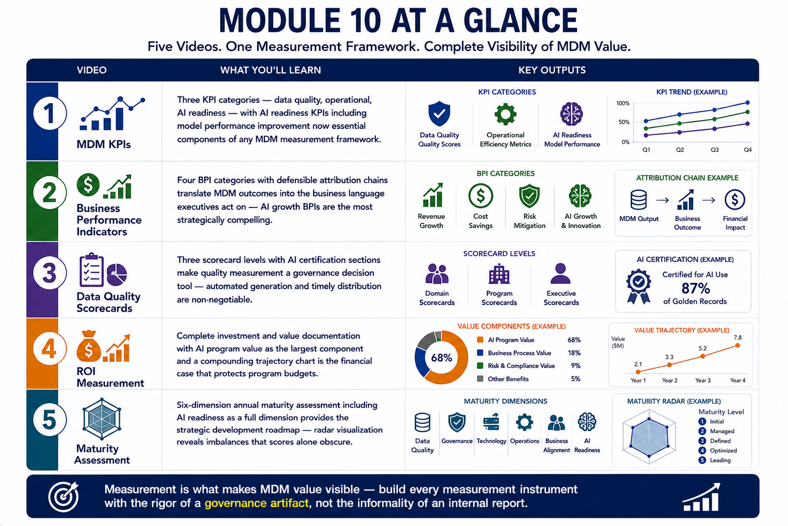
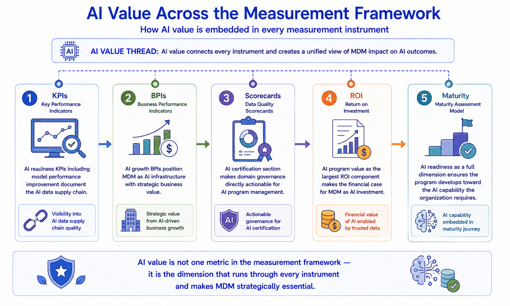
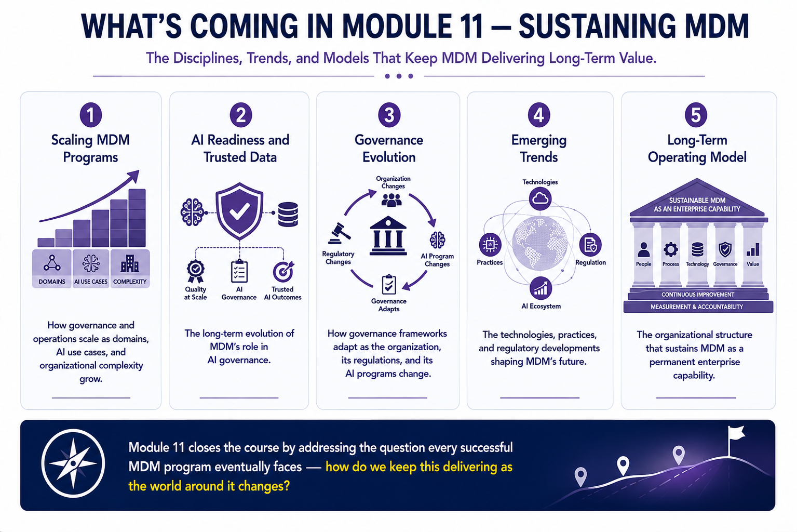
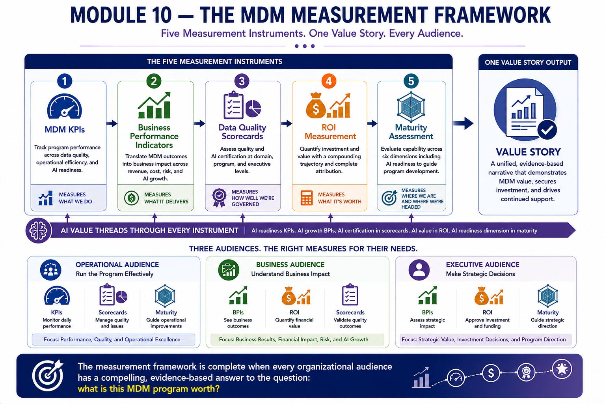

Module Recap
Module support notes
What This Module Covered
The central argument of this module is that measurement is not a reporting obligation that follows program delivery — it is a strategic discipline that determines whether the program continues to receive the investment it needs. Programs that deliver operational excellence but fail to communicate that excellence in business and AI terms lose their budget. Programs that measure rigorously and communicate compellingly sustain executive support through reorganizations, competing priorities, and leadership changes.
Every measurement component covered in this module serves that strategic purpose — not just as a record of program performance, but as an active tool for sustaining the organizational commitment that MDM programs require to deliver their full value.
- MDM KPIs — three-category framework covering data quality, operational, and AI readiness KPIs, selected to match the program's current maturity stage and reported to the audience that acts on each category
- Business Performance Indicators — revenue, cost, risk, and AI growth BPIs built with documented attribution methodology and presented in audience-specific subsets to each executive
- Data Quality Scorecards — one-page, AI-first scorecard design retained as time-stamped governance records that double as regulatory audit evidence
- ROI Measurement — confidence-ranged ROI with documented methodology for each component, plus an AI-specific ROI view that positions MDM as AI infrastructure for CDO and AI program leader audiences
- Maturity Assessment — contextually customized assessment presented in consequence-based language that connects maturity levels to AI program capacity and business outcome implications

The AI Value Thread Through Module 10
The AI value thread through Module 10 is the most financially explicit of any module — because measurement is where AI value becomes the number that executives approve or reject in budget conversations. The AI model performance improvement KPI that documents an average 8.5-point accuracy gain. The AI program ROI view that shows 14 models on certified data delivering $2.1M in annual value. The maturity briefing that shows advancing from Level 3 to Level 4 AI readiness would enable 21 additional models. These are not qualitative arguments for MDM value — they are the financial evidence that sustains investment decisions.
Note
AI value runs as an explicit financial thread through all five measurement components: KPIs track AI model performance improvement as a primary indicator; BPIs include AI growth as a full value quadrant; Scorecards lead with AI certification status; ROI includes an AI-specific program view; Maturity Assessment frames advancement in AI capacity terms. Together these five components make AI value the most visible and most compelling dimension of the MDM measurement framework.

Preparing for Module 11
Module 11 is the final content module of the course — and it addresses the question that the preceding ten modules have been building toward: how does an organization sustain MDM as a permanent, evolving capability rather than a program that peaks at go-live and gradually degrades?
Scaling MDM programs, maintaining AI readiness as AI ambitions grow, evolving governance as the organization changes, anticipating emerging technology trends, and building the long-term operating model that makes MDM self-sustaining — these are the disciplines that determine whether the investment every prior module represents continues to deliver compounding value or quietly erodes over time.
Tip
As you move into Module 11, carry the measurement framework from this module forward as your sustaining discipline. Scaling decisions should be informed by maturity assessment. Governance evolution should be guided by scorecard trends. AI readiness investments should be justified by AI program ROI. The measurement framework is not just a reporting tool — it is the management instrument that makes every Module 11 discipline data-driven rather than intuitive.

A complete measurement framework closes the loop between MDM program activity and organizational investment — making the case for sustaining, scaling, and evolving the program every time a budget decision is made.
